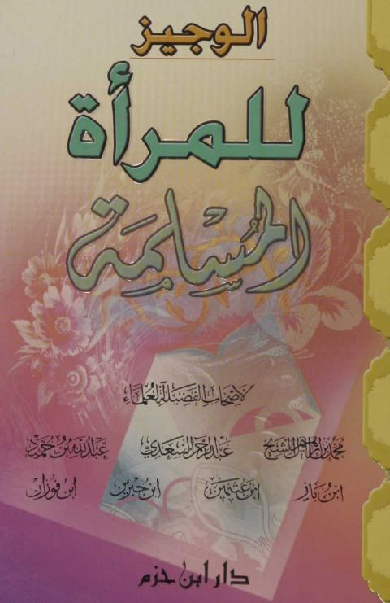

Downloads need an internet connection.
الوجيز للمرأة المسلمة
Authors: عبد الله بن عبد الرحمن الجبرين عبد العزيز بن عبد الله بن باز محمد بن صالح العثيمين عبد الرحمن بن ناصر السعدي محمد الشيخ عبد الله حمود ابن فوران
Publishers: دار ابن حزم
**▫️ العنوان: الوجيز للمرأة المسلمة** ▪️ المؤلف: #محمد_الشيخ • #عبد_الرحمن_السعدي • #عبد_الله_حمود • #ابن_باز • #ابن_عثيمين • #ابن_جبرين • #ابن_فوران ▫️ الناشر: #دار_ابن_حزم ▪️ تاريخ النشر: 1428- 2007 ▫️ بلد النشر: بيروت، #لبنان ▪️ الطبعة: 1 ▫️ عدد الأجزاء: 1 ▪️ الصفحات: 363 ▫️ نوع الوعاء: #كتاب ▪️ التصنيف الرئيسي: #المرأة_والمجتمع ▫️ التصنيف الفرعي: #المرأة_في_الإسلام ۪